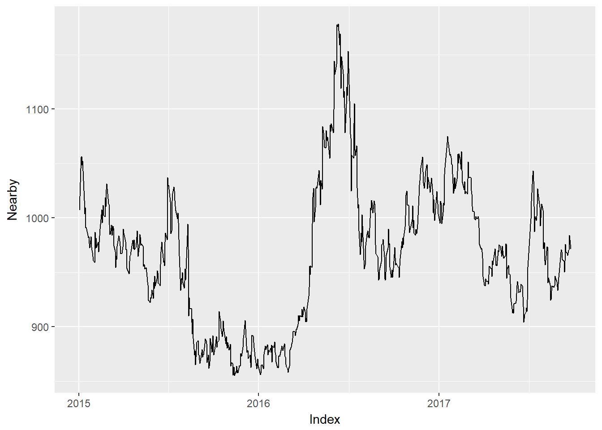

Chapter 3 Create Series of Nearby Prices
One of the most common tasks that we do is examine a series of nearby futures prices. Historical data for futures prices is readily available, but series of nearby prices are often behind a paywall. Peicing together a nearby series on your own by hand is tedious and error prone. The script found at
https://github.com/mindymallory/RollFutures
does this programmatically. It fetches the appropriate contracts from Quandl.com, and then identifies the nearby contract. The nearby is rolled to the first deferred when volume in the first deferred overtakes volume in the nearby. Hu et al. (2017) showed that price discovery typically moves to the first deferred contract when it’s volume surpasses the nearby, so that is the method of rolling employed here.
3.1 Markets Covered
This script will pull corn, soybeans, KC wheat, Chicago wheat, and crude oil.
3.2 The Script
Before you begin running the script, make sure you have created a new folder for you project and create a new R project. This will make all the working directories correct. See this for details.
First, install and load the required packages. Note that you will need to go to Quandl.com and sign up for a free account and get an api key. Place it inside the quotes in the Quandl.api.key() function.
# install.packages("Quandl")
# install.packages("plyr")
# install.packages("tidyr")
# install.packages("ggplot2")
library(Quandl)
library(plyr)
library(tidyr)
library(ggplot2)
#Quandl.api_key("YourAPIKeyHERE")Next, initialize the parameters how you want. Choose the start and end date you need for your data. Then modify the c_code line to choose the correct commodity. c_code=2 is shown so this will pull soybeans data. If you choose something else you need to comment the contracts <- line for soybeans and uncomment the line for the commodity you want. The letters correspond to the listed contract months for each commodity. E.g, Z is for December.
start <- 2015
end <- 2017
c_code <- 2
commodity_code <- c("C", "S", "W", "KW", "CL")
# #C
# contracts <- c('H', 'K', 'N', 'U', 'Z')
#S
contracts <- c( 'F', 'H', 'K', 'N', 'Q', 'U', 'X')
# #W
# contracts <- c( 'H', 'K', 'N', 'U', 'Z')
# #KW
# contracts <- c( 'H', 'K', 'N', 'U', 'Z')
# #CL
# contracts <- c( 'F', 'G', 'H', 'J', 'K', 'M', 'N', 'Q', 'U', 'V', 'X', 'Z')The next portion of code defines a list and then uses the Quandl() function to fetch data from Quandl.com. Notice we use the paste0() function to buld the correct commodity code to give to the Quandl api.
years <- seq(start, end, by =1)
data <- list()
k <- 1
for (i in start:end){
for (j in 1:length(contracts)){
MyData = cbind(Quandl(paste0("CME/", commodity_code[c_code], contracts[j], years[i-start +1])), paste0(contracts[j], '-', years[i-start+1], '-Settle'), paste0(contracts[j], '-', years[i-start+1], '-Volume'))
data[[k]] <- MyData
k <- k+1
# To keep raw data files uncomment this line.
# write.csv(MyData, file = paste0("data-download/", contracts[j], years[i-start +1], ".csv"))
}
}Then the list is converted to a dataframe with the ldply() function. Here we also separate out the settle and volume and stack them vertically with rbind so that the contract info can be stored as a single factor variable.
DATA <- ldply(data, rbind)
DATA <- DATA[, c(1,7,8,10, 11)]
DATA <- as.data.frame(DATA)
colnames(DATA) <- c('Date', 'Settle', 'Volume', 'Contract.Settle', 'Contract.Volume')
settle <- DATA[, c("Date", "Contract.Settle", "Settle")]
volume <- DATA[, c("Date", "Contract.Volume", "Volume")]
colnames(settle) <- c('Date', 'Contract', 'Value')
colnames(volume) <- c('Date', 'Contract', 'Value')
DATA <- rbind(settle, volume)
colnames(DATA) <- c('Date', 'Contract', 'Value')In the next lines we use the spread function to take the long data set to a wide dataset where each row contains a date with all the contracts trading in separate columns for settle price and volume. We print the ‘long’ dataset before applying spread and the ‘wide’ dataset after to give a sense what the code is doing. The last line trims the dataset to your requested dates.
head(DATA)## Date Contract Value
## 1 2015-01-14 F-2015-Settle 992.0
## 2 2015-01-13 F-2015-Settle 1000.0
## 3 2015-01-12 F-2015-Settle 1013.0
## 4 2015-01-09 F-2015-Settle 1051.0
## 5 2015-01-08 F-2015-Settle 1045.0
## 6 2015-01-07 F-2015-Settle 1052.5DATA <- spread(DATA, Contract, Value)
DATA <- as.xts(DATA[, -1], order.by = DATA[, 1])
DATA <- DATA[paste0(start,'/',end)]
head(DATA)## F-2015-Settle H-2015-Settle K-2015-Settle N-2015-Settle
## 2015-01-02 1002.0 1007.0 1014.5 1020.0
## 2015-01-05 1039.5 1045.5 1052.0 1057.0
## 2015-01-06 1051.0 1055.5 1061.0 1066.0
## 2015-01-07 1052.5 1056.5 1061.0 1065.5
## 2015-01-08 1045.0 1048.5 1053.5 1058.5
## 2015-01-09 1051.0 1052.5 1057.0 1062.0
## Q-2015-Settle U-2015-Settle X-2015-Settle F-2016-Settle
## 2015-01-02 1020.5 1004.0 993.5 998.0
## 2015-01-05 1055.5 1037.5 1025.0 1029.5
## 2015-01-06 1063.0 1043.0 1028.5 1033.5
## 2015-01-07 1062.5 1041.0 1025.0 1029.0
## 2015-01-08 1056.5 1034.5 1017.0 1022.5
## 2015-01-09 1059.0 1037.5 1019.0 1024.0
## H-2016-Settle K-2016-Settle N-2016-Settle Q-2016-Settle
## 2015-01-02 1002.0 1004.5 1008.5 1007.5
## 2015-01-05 1034.5 1036.5 1039.0 1037.5
## 2015-01-06 1038.5 1040.0 1043.0 1041.5
## 2015-01-07 1034.5 1036.0 1039.0 1037.5
## 2015-01-08 1027.0 1029.5 1032.0 1030.5
## 2015-01-09 1029.5 1031.0 1035.5 1033.0
## U-2016-Settle X-2016-Settle F-2017-Settle H-2017-Settle
## 2015-01-02 992.5 985.0 985.5 985.5
## 2015-01-05 1022.5 1008.0 1008.5 1008.5
## 2015-01-06 1026.5 1012.5 1013.0 1013.0
## 2015-01-07 1019.5 1001.0 1001.5 1001.5
## 2015-01-08 1012.5 992.0 995.0 995.5
## 2015-01-09 1015.0 995.5 997.5 998.0
## K-2017-Settle N-2017-Settle Q-2017-Settle U-2017-Settle
## 2015-01-02 991.5 1006.5 1006.5 1006.5
## 2015-01-05 1018.5 1029.0 1029.0 1029.0
## 2015-01-06 1018.0 1033.5 1033.5 1033.5
## 2015-01-07 1011.5 1022.0 1022.0 1022.0
## 2015-01-08 1001.5 1013.5 1013.5 1013.5
## 2015-01-09 1006.5 1017.0 1017.0 1017.0
## X-2017-Settle F-2015-Volume H-2015-Volume K-2015-Volume
## 2015-01-02 979.5 9191 63624 15351
## 2015-01-05 1001.5 7334 117101 20283
## 2015-01-06 1005.5 3997 100146 24102
## 2015-01-07 993.5 3865 78827 23459
## 2015-01-08 985.0 4033 72445 19887
## 2015-01-09 987.5 3320 64335 18130
## N-2015-Volume Q-2015-Volume U-2015-Volume X-2015-Volume
## 2015-01-02 13690 472 201 6484
## 2015-01-05 19915 1306 185 10079
## 2015-01-06 21067 413 215 9464
## 2015-01-07 23225 607 313 10202
## 2015-01-08 14560 614 239 8110
## 2015-01-09 14016 730 297 8428
## F-2016-Volume H-2016-Volume K-2016-Volume N-2016-Volume
## 2015-01-02 89 28 0 1
## 2015-01-05 121 34 10 1
## 2015-01-06 102 51 16 23
## 2015-01-07 126 69 34 21
## 2015-01-08 437 121 48 96
## 2015-01-09 323 65 4 1
## Q-2016-Volume U-2016-Volume X-2016-Volume F-2017-Volume
## 2015-01-02 0 0 38 0
## 2015-01-05 0 0 69 0
## 2015-01-06 0 0 35 0
## 2015-01-07 0 0 57 0
## 2015-01-08 0 0 42 0
## 2015-01-09 0 0 20 0
## H-2017-Volume K-2017-Volume N-2017-Volume Q-2017-Volume
## 2015-01-02 0 0 1 0
## 2015-01-05 0 0 0 0
## 2015-01-06 0 0 0 0
## 2015-01-07 0 0 0 0
## 2015-01-08 0 0 0 0
## 2015-01-09 0 0 0 0
## U-2017-Volume X-2017-Volume
## 2015-01-02 0 0
## 2015-01-05 0 1
## 2015-01-06 0 0
## 2015-01-07 0 0
## 2015-01-08 0 0
## 2015-01-09 0 0Now, we use the apply function to apply which.max to every row. This delivers the index of which column takes the maximum value. Since we only identified the volume columns, this will identify the column with maximum volume. Once we have all these indices, we can build a series of nearby prices by using the index to pick out the contracts’ settle price that had the maximum volume for each date.
temp <- apply(DATA[, (length(contracts)*length(years)+1):dim(DATA)[2]], 1, which.max)
nearby <- vector(mode= "numeric", length = length(temp))
for (i in 1:length(temp)){
nearby[i] <- DATA[i, temp[i]]
}
DATA$Nearby <- nearby
head(DATA$Nearby)## Nearby
## 2015-01-02 1007.0
## 2015-01-05 1045.5
## 2015-01-06 1055.5
## 2015-01-07 1056.5
## 2015-01-08 1048.5
## 2015-01-09 1052.5g <- autoplot(DATA$Nearby)
g
Now the dataset DATA$Nearby can be used in whatever analysis you want to do. If you prefer to write it to a .csv file in order to use it somewhere else do something like the following, but put in your own file path.
write.zoo(DATA$Nearby, file = "YourFilePath.csv", sep = ",")Multi-Market Models VECM
Zhepeng Hu, Philip Garcia, Mindy Mallory. 2017. “Measuring Price Discovery Between Nearby and Deferred Contracts in Storable and Non-Storable Commodity Futures Markets.” Working Paper.